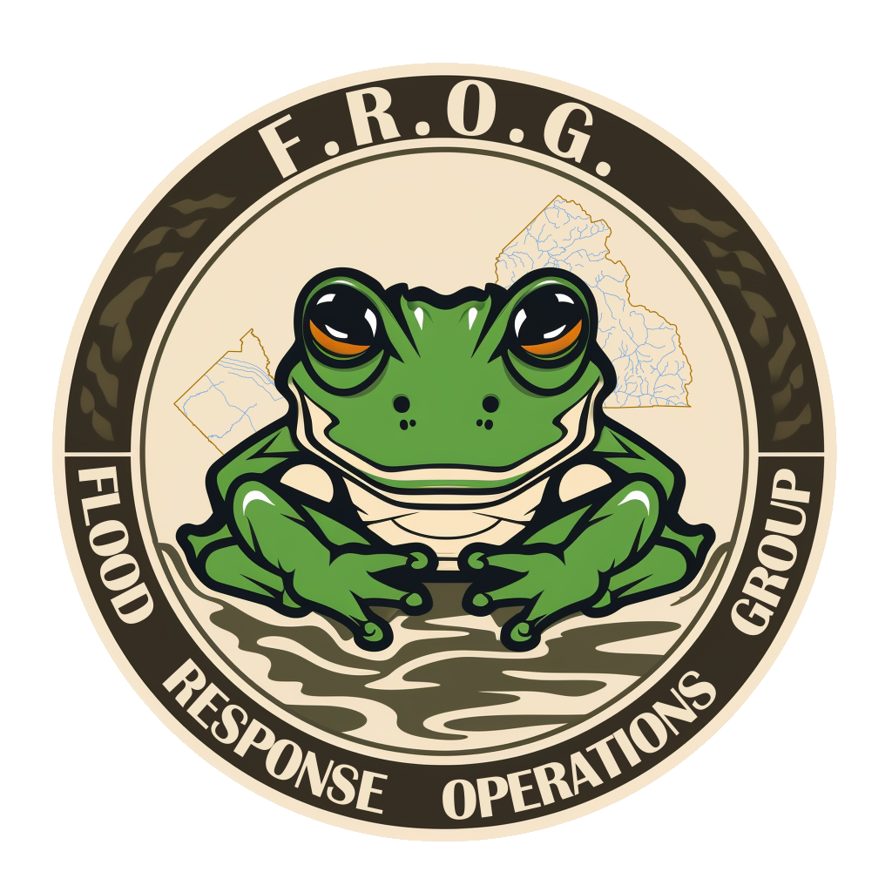

RENDERING TEST BED · NO OPERATIONAL DATA YET. Terrain and imagery are reference context, not lidar or current conditions.
Drag to pan, right-drag to rotate and tilt, scroll to zoom toward the cursor; arrow keys pan.
Measuring…
Elevation: Mapzen/AWS Terrarium tiles (about 38 m in the valley, finer where the source has it), streamed. Imagery: Esri World Imagery (Esri, Maxar, Earthstar Geographics and the GIS user community), streamed. The covered area is Fresno County and the upstream Millerton and Pine Flat watersheds; outside it the scene is coarser. Plan: docs/county-3d-plan.md.